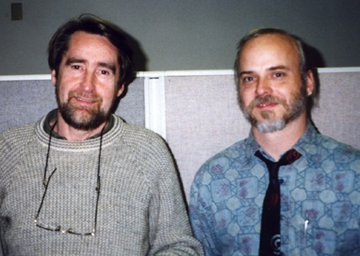
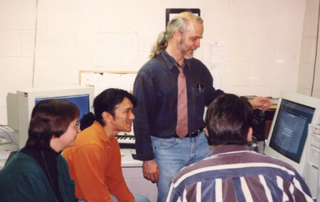
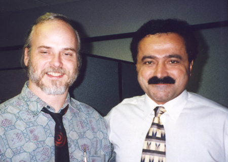
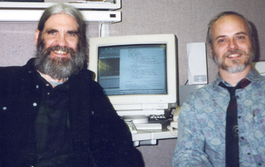
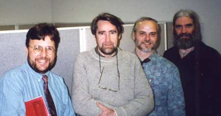

[Richard Boulanger & Robert Cooper]
Dr. Robert L. Cooper was an Adjunct Assistant Professor of Music Composition,
Co-Director for the M-PACT Center (Music Production and Computer Technology), and
computer consultant for the Conservatory of Music at the University of Missouri -
Kansas City. During his all too brief carreer, he received the National
Foundation for the Advancement of Musical Arts Award, the Leith Stevens Award for
Music Composition, and recently the MTNA/MMTA Composer of the Year Award. He has
published articles for Keyboard Magazine (Co-authored with Richard Boulanger -
Csound Virtual Synthesis) and the International Jazz Educators Association (an
analysis of his work for trumpet and tape - Parking Permitted). His compositions
were featured at the National SEAMUS and SCI Conferences and Internationally in
Brazil (1995 Open Air Electroacoustic Concert in Brazilia) and Poland
(Conservatory of Music - Krakow). The Csound Book is humbly dedicated to the
memory of this wonderful composer, teacher, mentor, father and friend.

[Barry Vercoe & Robert Cooper]

[Robert Cooper & his Students]

[Robert Cooper & Mike Haidar at Analog Devices Inc.]

[John ffitch & Robert Cooper at Analog Devices Inc.]

[Richard Boulanger, Barry Vercoe, Robert Cooper & John ffitch at Analog Devices Inc.]